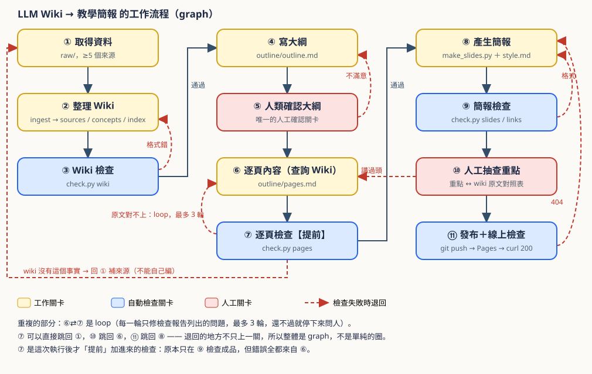

工作流程圖：從資料到教學簡報

（上圖是 workflow.svg；在 GitHub 上看這份檔案，下面的 mermaid 也會畫成圖。）

flowchart TD
A[① 取得資料<br>raw/] --> B[② 整理 Wiki<br>ingest]
B --> C{③ Wiki 檢查<br>check.py wiki}
C -- 格式錯 --> B
C -- 通過 --> D[④ 寫大綱]
D --> E{⑤ 人類確認大綱}
E -- 不滿意 --> D
E -- OK --> F[⑥ 逐頁內容<br>查詢 Wiki]
F --> G{⑦ 逐頁檢查【提前】<br>check.py pages}
G -- 原文對不上：loop 最多 3 輪 --> F
G -- wiki 沒有這個事實 --> A
G -- 通過 --> H[⑧ 產生簡報]
H --> I{⑨ 簡報檢查<br>slides / links}
I -- 格式、連結錯 --> H
I -- 通過 --> J{⑩ 人工抽查重點}
J -- 講過頭 --> F
J -- OK --> K{⑪ 發布＋線上檢查}
K -- 404 --> H每個節點在做什麼
| 節點 | 做什麼 | 產出 | 檢查／退回規則 | ||||
|---|---|---|---|---|---|---|---|
| ① 取得資料 | 找來源，存成 raw/，寫網址、日期、英文原文摘錄 | raw/0X-*.md | 原文摘錄要能在抓下來的原文裡找到（verify_quotes） | ||||
| ② 整理 Wiki | 一次 ingest 一個來源：寫 sources 摘要、更新 concepts／comparisons、index、log | wiki/ | — | ||||
| ③ Wiki 檢查 | check.py wiki：雙向連結、孤兒頁、每句有 [Sx]、frontmatter 一致 | 檢查報告 | 失敗 → 回 ② | ||||
| ④ 寫大綱 | 對象、目標、每頁要講什麼、每頁用哪幾頁 wiki | outline/outline.md | — | ||||
| ⑤ 人類確認大綱 | 唯一一定要人看的地方（老師上課也說只檢查大綱就好） | — | 不滿意 → 回 ④ | ||||
| ⑥ 逐頁內容 | 只用 wiki 寫每頁重點，每個事實用 `{{文字 | wiki頁 | 原文}}` 標出處 | outline/pages.md | — | ||
| ⑦ 逐頁檢查【提前】 | check.py pages：原文找得到嗎？有沒有沒標出處的數字？ | 檢查報告 | 原文對不上 → 回 ⑥（loop，最多 3 輪）；wiki 根本沒有 → 回 ① | ||||
| ⑧ 產生簡報 | make_slides.py 照 style.md 產生單一 HTML | slides/index.html | — | ||||
| ⑨ 簡報檢查 | check.py slides、check.py links | 檢查報告 | 失敗 → 回 ⑧ | ||||
| ⑩ 人工抽查 | 看「重點 ↔ 原文」對照表，抓程式抓不到的「講過頭」 | 對照表 | 講過頭 → 回 ⑥ | ||||
| ⑪ 發布 | git push → GitHub Pages → curl 每一頁都要 200 | 網址 | 404 → 回 ⑧ |
哪些步驟會重複？為什麼？
- ⑥ ⇄ ⑦ 是 loop：寫逐頁內容最容易出錯（AI 會順手補上 wiki 沒有的知識），所以每寫完一輪就檢查，每輪只修檢查報告列出的問題。設 最多 3 輪 的停損點，還不過就代表 wiki 本身缺資料，停下來讓人決定。
- ⑦ → ① 是 graph 的跳回：如果某個事實 wiki 裡根本沒有，不能在簡報裡自己編，要回到最前面補來源、ingest 進 wiki，再重新往下走。這次執行就真的發生了一次（補了 S8）。
- 每新增一個來源，② → ③ 都會重跑一次：wiki 會越長越大，每次 ingest 都要重新 lint。
檢查放在哪裡？為什麼？
- 自動檢查放在每一段產出之後（③⑦⑨⑪），因為程式檢查很便宜，越早抓到越省事。
- 人工檢查只放兩個地方：⑤ 大綱（AI 想的方向可能跟我不一樣，越早糾正越好）和 ⑩ 抽查（程式只能檢查「原文存在」，不能判斷「原文有沒有真的支持這句話」）。
- ⑦ 是這次跑完一輪之後才「往前搬」的檢查，原因寫在 反思。